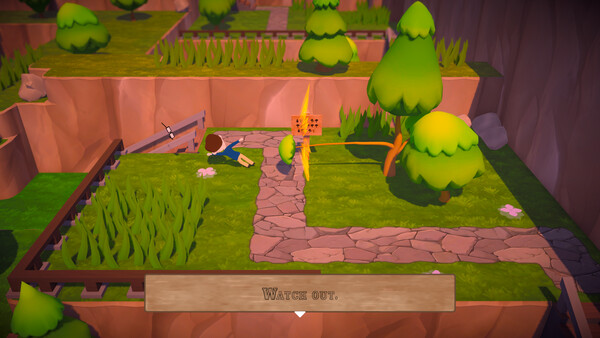
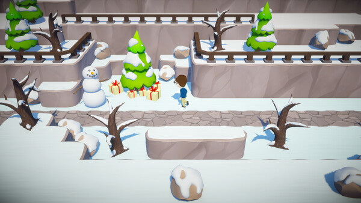
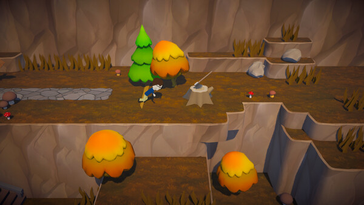
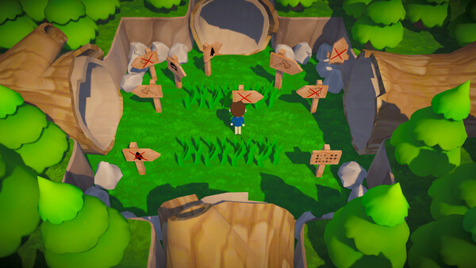

Click to start playing instantly · Free browser demo
WASD or Arrow Keys to move. Spacebar / F to interact. Die fast, respawn faster. Trust nothing.
The forest isn't just hostile. It's personal. Every trap is a joke and you're the punchline.
Click to start playing instantly · Free browser demo
WASD or Arrow Keys to move. Spacebar / F to interact. Die fast, respawn faster. Trust nothing.
Trees Hate You is what happens when a solo developer asks: what if the forest had a personal grudge against you? Not a generic "nature is dangerous" thing — actual malice. The kind where a tree disguises itself as a truck driver just to run you over. The kind where you finally earn a top hat and a dead tree snatches it, toys with you, then tears it in half.
Tykenn started this as a practice project in June 2025. Zero budget. Zero marketing. Just an idea about a forest that hated your guts and wasn't subtle about it. He posted a TikTok montage of creative tree deaths in November 2025. It hit millions of views. IShowSpeed played it. MoistCr1TiKaL. DashieGames. CaseOh. 8-BitRyan. What started as a joke became one of the most talked-about indie games of the year.
Most rage games are hard because the controls are bad or the physics are cruel. Trees Hate You is different. The controls are simple — WASD to move, spacebar to interact. The difficulty comes from the forest learning how you think and using it against you. Walk slowly and check every corner? The game notices and puts a trap exactly where your cautious path leads. Start rushing because you've seen this section before? The game changed it while you weren't looking.
Every trap has setup, anticipation, and payoff. The forest gives you just enough confidence to commit to a bad decision, then snaps the trap shut at exactly the right moment. You don't just die — you realize, a split second before it happens, exactly what you walked into. That moment of recognition is the punchline.
Die in three seconds? Back in the game in one. No loading screen. No progress lost. No time to stew in frustration. The game knows that anger curdles when you sit with it. By the time you register the death, you're already walking again — probably laughing. This is the single most important design choice in the game.
Some traps only trigger if you walked a certain path earlier. Some hazards reposition themselves based on how you've been playing. Trees inch toward you when your back is turned. The pause menu isn't safe. The tutorial lies. Every signpost is a setup. The game isn't just trying to kill you — it's trying to learn you.
Deaths are short, surprising, and visually absurd. They're perfect clip content — three seconds of setup, a half-second of realization, then chaos. This isn't accidental. The game was practically designed for Twitch chat and TikTok reaction videos. When a streamer gets baited into the same trap twice, the chat explodes. That's the loop that drove millions of views.
The free browser demo gives you the full first biome — a complete slice of what the full game will offer. Here's the path the forest has planned for you.

The game opens like a gentle walking sim. Green grass. Blue sky. A straight path home. The first tree falls three steps in. This section teaches you the basic lesson: nothing is safe. Trees drop from above, burst from the ground, and throw leaf balls at your head. By the time you reach the first checkpoint, trust is already gone.

Now the forest starts lying. Signs appear — "Safe Path," "Shortcut," "This Way." Every single one leads to a trap. Some signs appear half a second after you've already triggered what they were warning you about. This section introduces psychological warfare. The trees aren't just attacking — they're manipulating.

Visibility drops. Trees crowd the path. Some inch toward you when your back is turned — literally reposition themselves when the camera isn't looking. Multiple trap types layer on top of each other. A falling tree might be the real threat, or it might be a distraction from the pit trap two steps ahead. The forest starts coordinating.

The demo's climax. After everything you've survived, a truck pulls up. The driver offers help. It's a tree. The tree runs you over. This is the moment that goes viral every time — the perfect encapsulation of what Trees Hate You is about. You trusted one more time, and the forest punished you for it.
The Steam release will include cursed swamps where the ground itself is a trap, haunted orchards with trees that predict your movement patterns, and at least three more biomes that Tykenn is keeping quiet about. The demo is just the forest. The full game is the entire ecosystem — and all of it hates you.
There's a reason Trees Hate You has a 4.9 rating despite killing players hundreds of times. It figured out something most difficult games don't: frustration is bearable when it's funny.
Pure difficulty — the kind where you die because the controls are unresponsive or the physics are random — makes players quit. Trees Hate You kills you because you trusted a sign. That's different. You weren't cheated. You were outsmarted by a tree. The distinction matters.
Then there's the shared suffering. Players don't just play Trees Hate You — they send clips of their deaths to friends. They post them on TikTok. They watch streamers fall for the same traps they fell for. The frustration becomes social currency. Dying in a creative way is almost more satisfying than surviving, because now you have a story to tell.
The game also respects your time in a way most rage games don't. Instant respawns mean you never lose progress. Every death teaches you something. By the time you finish a section, you know exactly where every trap is — not because you memorized a walkthrough, but because each one killed you personally. That knowledge feels earned.
Tykenn himself described the design philosophy as "malice with humor." It's not enough for a trap to kill you. It has to make you laugh. It has to feel personal. A boulder falling from nowhere is a jump scare. A warning sign that appears half a second after you've already stepped on the trap — that's a joke. And you're in on it, even if you're also the victim.
June 2025. Tykenn is messing around with a game idea. A forest that hates you. Not in a metaphorical way — the trees are actively trying to murder you, and they're creative about it. He throws together a demo, puts it on itch.io. Nobody notices.
November 2025. He cuts together a TikTok — just a montage of the protagonist dying in increasingly absurd ways. Trees dropping from the sky. A sign that says "safe path" over a pit. A tree disguised as a truck driver. The video hits a million views, then five million, then more.
By February 2026, content creators on every platform are playing it. The game is perfect for reaction content — short, surprising, impossible not to laugh at. IShowSpeed's playthrough brings another wave. MoistCr1TiKaL's deadpan commentary as trees obliterate him becomes a highlight reel. DashieGames. CaseOh. 8-BitRyan. The game hasn't even launched on Steam yet and it's already a phenomenon.
Tykenn goes from hobbyist to full-time developer. The Steam page goes up. The free demo stays free. The full version is coming in 2026 with more biomes, more traps, more of that signature malice delivered with a grin.
"Started playing at 11pm thinking I'd do ten minutes. Looked up at 2am still walking into the same trap over and over. The sign said 'safe path.' I knew it was lying. Walked anyway. Died. Laughed. Worth it." — itch.io, 5 plays ★★★★★
"My roommate asked why I kept yelling at my monitor. I showed him the truck driver part. He didn't believe it was a tree. We replayed it three times. He bought the game before I finished the demo." — Steam ★★★★★
"The moment I knew this game was special: I walked past a sign that said 'safe zone,' immediately got crushed by a falling tree, and the respawn put me right back in front of the same tree. It was waiting." — Reddit, r/indiegames ★★★★★
"Not a game you beat. A game you survive while laughing at yourself. The forest has better comedic timing than most stand-up specials I've seen this year. Tykenn understood something most devs don't — dying should be funny." — itch.io ★★★★★
The free browser demo includes the full first biome — the evil forest — with dozens of hand-placed traps, multiple hidden collectibles, and the infamous truck driver finale. The full Steam version adds cursed swamps, haunted orchards, and at least three more biomes. Tykenn updates the demo monthly with new traps.
Yes. The browser version runs directly on this page — no download, no install, no signup. Just click Play Demo. It works on desktop and most modern browsers. There's also a free downloadable demo on itch.io if you prefer to play offline.
Most rage games frustrate you with bad controls or random physics. Trees Hate You kills you because you trusted a sign that said "safe path." Every death is a joke structured with setup, anticipation, and punchline. Instant respawns mean you never lose progress. The game isn't hard because it's unfair — it's hard because the forest is smarter than you, and funnier.
The game was practically designed for it. Deaths are short (3 seconds of setup, half-second of realization, instant chaos) — perfect clip material. Streamers like IShowSpeed, MoistCr1TiKaL, DashieGames, CaseOh, and 8-BitRyan have all played it. Viewer reactions to traps are as entertaining as the game itself. If you create content, this game is free viral fuel.
First playthrough: 30 to 60 minutes, depending on how often you fall for the same trap. Speedrunners clear it in under 5 minutes. Most players spend more time laughing at their own deaths than actually progressing — and the game is designed for exactly that.
Currently confirmed for Steam (Windows) in 2026. No console or mobile versions have been announced yet. The browser demo works on desktop. Tykenn has mentioned interest in expanding platforms after the Steam launch if demand is there.